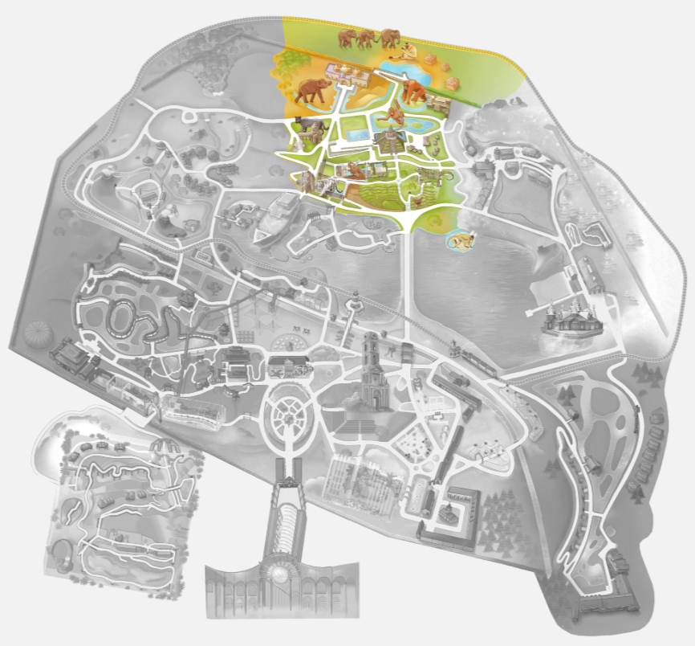

Le royaume de Ganesha

Véritable ode à la culture balinaise, le Royaume de Ganesha offre une immersion totale en Asie du Sud-Est. Son décor tropical, jalonné de temples et de statues sacrées, recrée à la perfection une atmosphère empreinte de spiritualité et de traditions ancestrales.
Cet univers est inspiré par la culture balinaise. Il est composé de temples et statues en pierres sombres dans une architecture typique des paysages volcaniques d'Indonésie.
Les chemins et décors de ce monde sont composés de plus de 8000 tonnes de pierres volcaniques acheminées depuis un volcan de l'île de Java. Elles ont été tailées sur place.
Ce monde rend hommage à Ganesh, le dieu le plus vénéré d'Inde. La légende raconte que Ganesha a été décapité par son père par erreur. Il l'a alors ressuscité en remplaçant sa tête par celle du premier animal qu'il a trouvé: un éléphant. Il symbolise la sagesse, l'intelligence, l'éducation et la prudence. Il est invoqué pour écarter les difficultés et assurer le succès de tout nouveau projet.
Porte et temple de Bayon
En face du bateau Vivarium, on voit une porte surmontée d'une énorme visage souriant avec bienveillance et de 2 tours. Cet temple, où se trouvent les tigres blancs, est inspiré du temple Bayon d'Angkor au Cambodge, qui compte plus de 50 tours et 200 gigantesques visages bienveillants. Les murs et toitures en pierre de lave sont sculptés de motifs khmers: lotus, serpents à 5 têtes, profils d'éléphants et déesses. Un autre espace, dédié aux panthères noires (entre la porte de bayon et le temple de Ganesha où sont les éléphants), arborent aussi des tours avec les visages souriants d'Ankgor.
Cuivre du Michigan
En face de l'arche d'entrée japonais de l'île du Soleil levant, et devant l'entrée du temple Bayon, on trouve des pierres diformes de couleur rouge orangé brillant. Il s'agit de cuivre natif du Michigan. Contrairement aux autres minéraux composés de cuivre mélangé à d'autres éléments, le cuivre natif est pur à 99,9%. Il est issu d'anciennes coulées de lave. Le cuivre est avec l’or l’un des premiers métaux prospectés en raison de son état natif naturel très facilement utilisable. Il s'applatit sous l'impact d'un marteau, comme l'or et l'argent, contrairement à une roche minérale qui se fissure. Il se peut même que ce soit le premier métal dont l’homme se soit servi. Lors de fouilles archéologiques, des objets en cuivre furent découverts, datant de plus de 9000 ans avant J-C. Le cuivre est un outil puissant pour la méditation, il apporte énormément de concentration, d'où son utilisation pour les bols.
Le jardin sensoriel
En passant sous la porte du temple de Bayon on atteint le parcours sensoriel pieds nus, qui se présente comme un chemin conçu pour stimuler les sensations sous la plante des pieds. Sur ce sentier, différentes textures et éléments naturels invitent à ralentir le pas et à ressentir le sol : gravier, bois, herbe, sable et autres surfaces variées. Dans le jardin, on trouve différentes pierres semi-précieuses: de l'Onyx des Etats-Unis (noir), de l'Améthyste d'Uruguay (mauve), de l'Agathe du Brésil ou encore du quartz rose.
Shiva Lingams
Dans le jardin sensoriel se dressent 6 immenses pierres sacrées que l'on trouve exclusivement dans le lit d'un des 7 principaux fleuve d'Inde, le Marmada. Ce fleuve, telle une marmite géante, brasse des alluvions dans des torrents tourbillonnants pendant des siècles - ce qui lisse la pierre et lui donne sa forme ovoïde. Elles se dressent telles des monolithes. Elles ressemblent à d'énormes supositoires polis. Ou à des gellules de chocolat au lait mal mélangé à du cholocat blanc! Leur origine remonte à des millions d'années. Certaines atteignent 25 tonnes. Seules des familles autorisées peuvent extraire ces roches du lit du fleuve. Des artisans les polissent ensuite. Leur origine viendrait d'une météorite entrée en collision avec la terre, provoquant une chaleur tellement intense qu’elle aurait fait fondre la roche. Ses deux couleurs brun et blanc (accompagnées parfois de rouge) symbolisent l'union des énergies masculines (Shiva) et féminines (Shakti), ou celle du yin (noir, la lune) et du yang (blanc, le soleil). Elle est très prisée en lithothérapie pour stimuler la vitalité, combattre les fatigues, favoriser l'équilibre intérieur et l'épanouissement personnel, ou encore ancrer les énergies.
Le temple d'Ani
Le temple d'Ani (anciennement temple de Ganesha), où a lieu de nourrissage des éléphants à 14h30, est dédié à Ani, une matriarche éléphant du parc décédée en mettant au monde un éléphanteau (ses cendres se trouvent au dessus du porche d'entrée). C'est une structure massive à plusieurs niveaux, avec 3 sphère dorées sur le toit. Au sommet de la porte principale se trouve une statue de Shiva, le père de Ganesha.
A l'entrée du temple se trouve une statue de Ganesha. Il est souvent représenté avec une défense cassée, 4 bras tenant divers objets sacrés, et accompagné d'un rat qui symbolise la maîtrise des désirs matériels. Sa trompe est généralement tournée vers la gauche pour attirer le bonheur.
A l'entrée aussi on trouve des statues d'éléphants hyper réalistes, réalisées dans des souches et troncs de bois mort, par un artiste sculpteur de Thaïlande qui vient régulièrement réaliser des oeuvres dans son atelier dans le hangar face à l'hydravion. L'éléphant a des poils en fer sur la tête, comme les véritables éléphants qui ont des poils aussi durs que du fer.
Eléphants d'Asie
L'éléphant est le plus grand et le plus lourd mammifère terrestre: un mâle éléphant d'Asie peut mesurer jusqu'à 3m50 et peser 5 tonnes (l'éléphant d'Afrique est encore plus grand). Vivant en groupes familiaux dirigés par une matriarche, ils se nourrissent de plus de 200 kg de végétaux par jour.
L'éléphant d'Asie a des oreilles plus petites que celui d'Afrique. Sa trompe n'a qu'un "doigt" au lieu de 2 pour l'africain. Il a 2 bosses au sommet du front.
Sa peau est très dure, épaisse et plissée comme de l'écorce d'arbre. Elle est parsemée de poils rigides et piquants semblables à du fil de fer.
Seuls les mâles des éléphants d'Asie ont de longues défenses, qui poussent tout au long de leur vie. Les femelles éléphants d'Afrique, elles, ont des défenses aussi. Sa trompe est une fusion entre le nez et la lèvre supérieure. Souple et sensible, elle peut peser jusqu'à 100 kg. La trompe de l'éléphant possède quelques 150 000 muscles différents, ce qui lui permet une précision incroyable, capable de ramasser une seule cacahuète ou de soulever des troncs de plusieurs centaines de kilos. Elle est chaude et totalement dépourvue d'os, très flexible et douce à son extrémité.
Ils marchent sur la pointe avant de leurs pattes, car l'arrière est fait d'une poche de graisse pour absorber les chocs.
L'éléphant pousse de puissants barrissements qui rappellent le son d'une trompette. Lorsqu'il est calme, il produit aussi un ronronnement très grave que l'on ressent comme une vibration directement dans le sol.
Le parc accueille la plus grande colonie d'Europe (plus d'une vingtaine d'individus) et détient un record européen de reproductions réussies. Dont 2 naissances en 2025: Siam et Maximus, de 2 mères différentes.
La fontaine aux éléphants
Cette fontaine en pierre se compose de 4 petits éléphants en bronze, aux 4 coins de la fontaine, qui crachent de l'eau sur une colonne d'éléphants jouant les équilibristes au centre de la fontaine. Autour de la colonne d'éléphants, une série de petites cloches perforées, en pierre de lave, qui ressemblent à des cornets de glace à l'envers. On appelle ces cloches des stupas. Un stupa est composé d'un demi cercle, comme un demi globe terrestre, surplombé d'une pointe vers le ciel. La pointe symbolise l'axe qui connecte la vie terrestre de Bouddha et le ciel.
Les cloches sont inspirées du temple de Borobudur, à Java. C'est le plus célèbre temple bouddhiste et un des plus grands sites de pélerinage. Il est composé de 72 stupas autour d'un stupa géant.
Les stupas ont été créés à l'origine pour contenir des reliques corporelles du Buddha ou d'un de ses saints disciples. Aujourd'hui elles abritent aussi des objets qui lui ont appartenu ou des extraits de doctrine bouddhiste.
Le bois fossilisé
Près de la fontaine des éléphants et devant la plage du bain des éléphants, on trouve des troncs d'arbres fossilisés. Ces pierres sont le fruit d'une transformation du bois qui a duré au moins cent ans. Le processus de pétrification s'est produit quand le bois fut enterré sous une couche de sédiments (sans apport d'oxygène) avant qu'une eau riche en minéraux n'imprègne peu à peu ses cellules de minéraux. La matière organique du bois pétrifié a été quasiment complètement remplacée par un minéral, du silicate ou du quartz essentiellement. Mais sa structure anatomique a été conservée, telle que lorsqu’il s’agissait encore d’un arbre.
Le temple des fleurs Pura Bunga
Ce temple a été sculpté en lave sombre d'un volcan sacré de Bali. Il est composé de 6 plateaux carrés superposés du plus grand au plus petit, en forme de pyramide. Sur chaque "marche" de la pyramide sont plantés des lotus, du riz, des fleurs… Au centre d'une des faces de la pyramide, l'eau, source de vie, dévale en cascade sur un large escalier bordé de deux serpents-dragons. Tout en haut se trouve une petite tour avec un toit pyramidal sculpté et une porte. On appelle cette tour un "Candi Kurung". On peut monter tout en haut via deux escaliers sur deux flancs de la pyramide. L'intérieur du temple se visite. Ses murs blancs sont ornés de sculptures et reliefs.
Tout en haut du temple, on atteint le point le plus élevé du parc Pairi Daiza.
Le Temple des Fleurs est dédié à l’univers des fleurs car, conformément aux principes hindouistes, toute forme de vie est d’origine divine, et donc digne d’un temple. Le "Candi Kurung", la petite tour tout en haut, représente l’air, le vent et le passage à un niveau supérieur de spiritualité. A l'intérieur et autour du temple vivent les loutres asiatiques et orangs-outans de Sumatra.
Le temple Pura Agung Santi Bhuwana
Ce temple est un complexe de différentes cours et petits temples au toit pointu fait d'herbes noires tressées. On y entre par une sorte d'arche fendu en deux, appelé "Candi bentar" qui marque la transition du monde profane au monde sacré. Si un démon essaie de franchir une candi bentar, ses 2 morceaux se rejoindront et le démon sera alors écrasé.
Un autel est couvert de 5 toits superposés. On appelle ce type d'autel un "meru". Plus il y a de toits (un nombre impair entre 3 et 11), plus la divinité vénérée est élevée dans la hiérarchie spirituelle. L'organisation des espaces dans ce temple n'est pas laissée au hasard. Le chiffre 3 joue une rôle clé, en hommage aux 3 principales déités hindous Brahma, Vishnu et Shiva. La disposition des constructions suit aussi un axe spécifique par rapport à l'axe mer-montagne (pas les points cardinaux Nord-Sud par exemple).
Le temple ("pura" en balinais) est dédié à la divinité suprême conférant harmonie, sérénité, prospérité et bonheur: « Agung » signifie grand, « Shanti » serein, et « Bhuwana » l’univers. Les femmes qui ont leur règles sont invitées à ne pas y entrer. Pairi Daiza met à disposition ce temple pour les rites et cérémonies des Balinais de Belgique, auxquelles on peut assister. On y trouve par exemple une tour de la cloche pour appeler les fidèles, un pavillon des offrandes, un autel, une place de la musique et des danses, etc. Sur l'autel, un masque de Barong, un dragon bénéfique mis en scène dans des cérémonies religieuses très populaires à Bali. C'est le roi du Bali qui l'a offert au Pairi Daiza. Les tissus colorés (les "saput") drapés sur les autels et les statues sont des pièces sacrées indonésiennes. Ils sont utilisés pour habiller la pierre, marquer la sacralité du lieu et symboliser l'équilibre entre le bien et le mal (notamment le tissu à damier noir et blanc, le Poleng).
La maison de l'artisan
Derrière le village de Timor se dresse une authentique maison thailandaise à 2 étages, construite tout en bois. Elle a été démontée en Thailande et reconstruite ici. À l’étage, on peut admirer et toucher une multitude de sculptures en bois représentant des animaux sacrés d’Asie, notamment des éléphants. Il y a aussi des Totems, des colonnes, d'immenses panneaux sculptés sur deux faces, et un Bouddha couché taillé dans un tronc de platane d'Orient. Le rez-de-chaussée abrite des orangs-outans de Soumatra dans une sorte de plaine de jeu intérieure, avec des mâts en bois, des hamacs et de cordes élastiques.
Orang-outangs de Sumatra
Dans et autour de la Maison de l'artisan, se trouvent 5 Orangs-outangs venus du Zoo de Francfort: mâle Kembali, les femelles Rosa et Indah, ainsi que leurs deux jeunes Bukit et Yori. Ce grand singe des arbres pèse environ 90 kilos pour les grands mâles. Tout son corps est recouvert d'un long pelage d'un roux flamboyant, tandis que sa face nue est marron. Ses poils sont longs, fins et ébouriffées. La longueur de ses poils varie selon les zones du corps : elle atteint environ 50 cm au niveau des épaules et peut aller jusqu'à 150 cm de long chez les mâles, qui arborent également une barbe très fournie. La paume de ses grandes mains est recouverte d'une peau très ridée, dure et calleuse comme du cuir épais.
Le mâle produit de puissants "longs cris" qui commencent par des grognements bas et finissent en sons vibrants pour marquer son territoire.
L’orang-outan est un animal extrêmement intelligent, capable d’utiliser des branches comme outils pour extraire des termites ou ouvrir des fruits. Il communique par gestes et non par cris, utilisant donc un véritable langage corporel.
En malais, « Orang » signifie « homme » et « Hutan », « forêt » : l’orang-outan est en effet un grand primate qui vit dans les arbres de la forêt équatoriale.
Il ne reste plus qu’environ 7.000 individus à l’état sauvage : la déforestation galopante, la destruction de son habitat ainsi que le braconnage mettent cette espèce en danger critique d’extinction.
Dans le temple des fleurs, on trouve d'autres Orang-outans de Sumatra: Ujian, Sari, leurs petits Berani et Mathaï né à Pairi Daiza.
Projet de la Fondation Pairi Daiza
Ces dernière années, la Fondation Pairi Daiza a œuvré à la concrétisation de deux projets importants pour l’espèce : restaurer l’habitat naturel de l’orang-outang à Bornéo en replantant plus de 11.000 arbres et réintroduire 9 individus à Bornéo en finançant notamment le transport des primates vers leur île de réadaptation. La Fondation soutient aussi financièrement la lutte contre les feux de forêts dans un parc refuge de 6000 orang-outans.
Magnolia
Avec son feuillage persistant rappelant le cuir au toucher, et sa floraison majestueuse, le Magnolia Grandiflora qu'on peut voir près de la Maison de l'artisan diffuse un parfum de citron de juin à septembre. Ses fleurs peuvent atteindre jusqu'à 20 cm de large.
Le grenier à riz
Il s'agit d'une véritable grenier à riz, démonté près de Bornéo, et remonté ici. Il est construit en brois, sur pilotis. On les reconnaît au toit courbé en forme de corne de buffle (animal sacré en Indonésie), ou de bateau, et leurs décorations symboliques. Au Pairi Daiza, il ne contient pas le riz des rizières du temple des fleurs car la météo ne permet pas de récolter des grains.
Saimiri
L'île des saimiris de Bolivie, aussi appelés Sapajou à tête noire, se trouve près de la plage de baignade des éléphants. C'est un petit singe qui mesure seulement 30 cm de corps, avec une longue queue un plus grande que son corps. Adulte, il pèse seulement entre 700 et 1kg (les mâles sont plus gros). Il est très social; il vit en groupe de jusqu'à 100 individus, où les femelles dominent. Son pelage jaune-gris-vert contraste avec son visage clair et expressif, marqué par de grands yeux sombres. Cette morphologie lui confère une excellente vision. C'est l’un des primates les plus actifs: il passe la majeure partie de la journée à se déplacer, explorer et interagir avec les membres de son groupe, laissant peu de place au repos. Ce sont des animaux bruyants: ils utilisent une large gamme de vocalisations aiguës et de signaux visuels pour rester en contact dans la végétation dense. Ils sont aussi malodorants: pour marquer leur territoire, les saïmiris urinent légèrement dans leurs mains, puis les frottent sur le reste du corps (plante des pieds, queue…). En se déplaçant, ils dispersent leur odeur et véhiculent ainsi des informations sur leur statut social et reproducteur
Le petit village de Timor
Entre le temple des fleurs et la Maison de l'artisan, se dresse un ensemble de petites maisons authentiques en bois, ramenées de l'île de Timor. On y trouve des panneaux décoratifs et des textiles "ikat" caractéristiques de l'artisanat local. C'est un espace de pique-nique.
Le Borobudur miniature
En face du village de Timor, on trouve une réplique à l'échelle 1 vingt-cinquième du temple de Borobudur sur l'île de Java. C'est un sanctuaire bouddhiste du 9ème siècle construit sans mortier ni ciment. Les cloches de la fontaine aux éléphants y font allusion aussi. Cette réplique a été construite avec la même pierre volcanique que le temple original.
Les autres animaux dans ce monde
Ce monde abrite aussi un tigre blanc, des panthères noires, des buffles d'eau, des porcs-épics, des macaques à crête, des gibbons à jours jaunes.